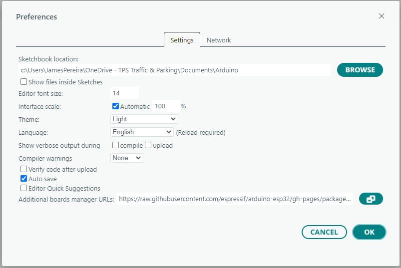
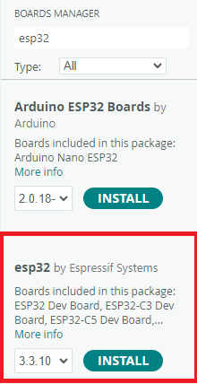
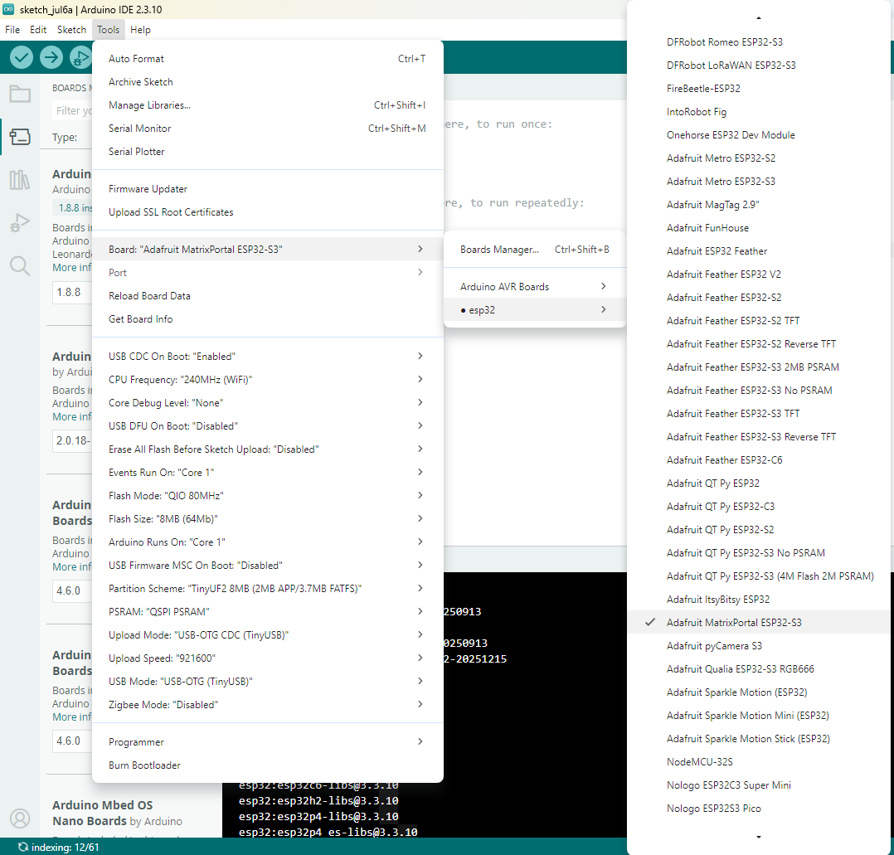
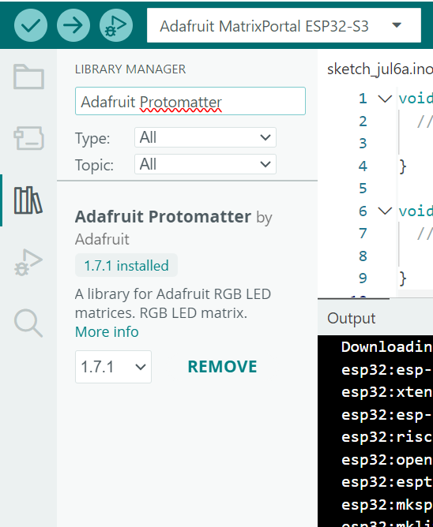

HUB75 RGB LED Matrix — Interactive Study Guide
How a 64×32 panel actually works, and how to drive it with the Adafruit MatrixPortal S3.
01Safety first — read this before you plug anything in
These panels are simple but they move a lot of current at low voltage, and the ESP32-S3 is a delicate 3.3 V device. Almost every "my board died" story comes from one of the mistakes below. None of this is hard to avoid once you know it.
- Common ground. If the board and the panel are ever powered from two different supplies, their grounds must be connected together. (On the MatrixPortal S3 driving one panel this is handled for you — just don't defeat it.)
- The bare metal on the back of the panel. The rear is exposed solder joints. Don't rest it on anything conductive (metal desk, loose wires, tools). A short across the 5 V rail can spark and damage traces.
- Don't hot-plug the ribbon cable. Connect/disconnect the HUB75 ribbon and the power leads only while everything is powered off.
- Wire gauge. High current needs adequate wire. Thin jumper wires carrying 4 A will heat up. Use the thick power leads that came with the panel.
- Start dim. Keep software brightness low (e.g. 20–40%) during first tests. Full white at 100% is the worst-case current draw and heat.
- Heat. Panels get warm in normal use. Give them airflow; don't box them in during long runs.
- Static (ESD). Handle the board by its edges. Touch a grounded metal object before handling to discharge yourself.
02What's actually inside the panel
A 64×32 HUB75 panel is not a grid of individually addressable pixels like a monitor. Inside are LED-driver shift-register chips that can only light two rows at a time. The panel rapidly cycles through all the row-pairs, and your eyes blend the flashes into one steady image — the same persistence-of-vision trick used by film and old CRT TVs.
- The 32 rows are split into a top half (rows 0–15) and a bottom half (rows 16–31), driven at the same time.
- For one row-pair, the controller streams color data for all 64 columns one pixel at a time, "latches" it to display, then moves to the next row-pair.
- This repeats thousands of times per second, so the whole panel looks continuously lit.
That's why the connector has two sets of RGB pins: R1 G1 B1 for the top half, R2 G2 B2 for the bottom half.
03What each HUB75 pin does
| Pins | Name | Purpose |
|---|---|---|
R1 G1 B1 | Top RGB data | Color bits for the pixel currently being clocked into the top half shift register |
R2 G2 B2 | Bottom RGB data | Color bits for the pixel currently being clocked into the bottom half shift register — loaded simultaneously with the top half |
A B C D (E) | Row address | 4-bit binary number (0–15) selecting which row-pair is active. Address 0100b = 4 → activates row 4 (top) and row 20 (bottom, = 16+4) at the same time |
CLK | Clock | Each rising edge shifts the current RGB values one column to the right inside the shift register — column 0 enters first and slides all the way to column 63 after 64 pulses |
LAT | Latch | Pulses once after all 64 CLK pulses: copies the completed shift-register row into the output register so it actually drives the LEDs |
OE | Output Enable | Active-LOW. While LOW the LEDs are on; while HIGH they are off. The driver pulses it HIGH briefly between rows (during the LAT + address change), then brings it LOW again. Brightness control: by varying how long OE stays HIGH (called OE blanking time), the driver dims the row — longer blanking = less on-time per cycle = dimmer. This is separate from BCM color depth. |
Can a pixel be more than one color? Can I mix R + G?
Yes — each pixel has three independent LEDs (red, green, blue) inside it, and any combination can be on at the same time:
R1=1 G1=0 B1=0→ red pixel onlyR1=1 G1=1 B1=0→ red + green together → yellowR1=1 G1=1 B1=1→ all three → whiteR1=0 G1=0 B1=1→ blue only
But remember these are still just 1-bit signals per channel at any instant — fully on or fully off. The perception of brightness and intermediate shades (like orange or sky-blue) comes from BCM: the library rapidly alternates between different on/off patterns weighted by time, so your eye averages them into smooth colors.
Why each color pin is only 1 bit — and how you still get millions of colors (BCM)
At any single moment, R1 is just HIGH or LOW — the raw panel has no per-pixel analog brightness. To get smooth gradients, the driver library redraws the whole panel many times per video frame. Each redraw uses a different time weighting: pass 1 stays on for 1 unit, pass 2 for 2 units, pass 4 for 4 units, pass 8 for 8 units, and so on (binary weights). Your eye averages the flashes into a perceived brightness level. This is Binary Code Modulation (BCM). The "bit depth" setting in code controls how many weighted passes happen per frame — more depth means smoother color gradients but requires faster refresh to avoid visible flicker.
Address pins, row-pairs, and "scan rate"
Setting the address pins to 0100b (decimal 4) selects row 4 in the top half and row 20 (= 16 + 4) in the bottom half simultaneously. The two halves are always updated in pairs — that is why there are two sets of RGB pins.
- 1/16 scan (most 64×32 panels): 16 row-pairs → 4 address pins
A B C D(24=16 combinations). 16×2 = 32 rows total. - 1/32 scan (most 64×64 panels): 32 row-pairs → 5 address pins
A B C D E(25=32). 32×2 = 64 rows total.
So our 64×32 panel uses only A B C D and leaves E unused.
04How ~13 pins control all 2048 pixels
A 64×32 panel has 2048 pixels but only ~13 signal wires. It works by combining two tricks that each cut the problem down a different axis:
Trick 1 — Multiplexing: 4 wires pick 1 of 16 row-pairs
The address pins A B C D form a 4-bit number 0–15. Each value activates exactly one row-pair; all others ignore the RGB pins. Instead of 32 separate row-select wires, 4 wires encode 16 choices (24=16). This is a classic binary decoder.
Trick 2 — Serial shifting: 6 wires + 64 clock pulses fill a whole row
Within the selected row-pair you still must color 64 columns, but you only have 6 color wires. A shift register inside the panel solves this like a horizontal conveyor belt:
- Put column 0's color on
R1 G1 B1 R2 G2 B2. - Pulse
CLK— that pixel value enters the leftmost slot of the shift register. Everything already inside slides one position to the right. - Put column 1's color, pulse
CLK— column 1 enters the left slot, pushing column 0 one step right. - Keep going left-to-right across all 64 columns. After 64 CLK pulses the conveyor is full: column 0 has traveled all the way to the rightmost slot (column 63's position), column 63 is in the leftmost slot — all 64 columns are in place using only 6 wires.
Then LAT copies that whole completed row to the LED output drivers at once, making all 64 pixels of the pair visible simultaneously.
05See it happen — interactive animation
The left panel is what your eyes perceive; the right is what's electrically lit at any single instant — only the addressed row-pair. Watch the shift register fill one column per CLK, the address bits count in binary, and LAT/OE flash. Click the A/B/C/D bits to jump to any row-pair yourself, use Step to go one clock at a time, or slow the speed right down. The test image spells TPS — the T is lit only on the Red channel, the P only on Green, and the S only on Blue, so you can watch each color channel work independently.
E pin (used only by 64×64 panels) disconnected.06Materials & tools you need
Hardware
- Adafruit MatrixPortal S3 (the ESP32-S3 controller with the HUB75 connector on the back).

- 64×32 HUB75 RGB LED matrix panel (any pixel pitch — P3, P4, P5… the pitch only changes physical size, not the code).

- 5 V power supply rated at least 4 A for a single 64×32 panel. A 5 V / 4 A "wall wart" is the recommended baseline; more headroom (5 A) is fine.
- Power leads — the panel usually ships with a power cable (red/black with a 4-pin plug on one end and spade/fork terminals on the other) that goes to the board's screw terminals.

- HUB75 ribbon cable — usually included with the panel; or plug the board directly onto the panel's rear connector.
- USB-C cable (data-capable, not charge-only) to program the board.
Tools
- Small flat screwdriver for the power screw terminals.

- Diagonal Cutters (Optional: Needed if there's a plastic nub on the matrix that prevents the MatrixPortal from plugging in firmly).

- A computer running the Arduino IDE.
- (Optional) multimeter to confirm your supply reads ~5 V and to check polarity before connecting.
07Software setup
- Install the Arduino IDE 2.x.
- Add ESP32 board support: File → Preferences, add the Espressif board-manager URL (
https://raw.githubusercontent.com/espressif/arduino-esp32/gh-pages/package_esp32_index.json).
Then open Boards Manager and install "esp32" by Espressif Systems.
- Select the board: Go to Tools → Board → ESP32 Arduino and select the Adafruit MatrixPortal ESP32-S3 (or Adafruit Feather ESP32-S3) entry. (If you don't see the ESP32 Arduino sub-menu, the board support package from step 2 isn't fully installed yet).

- Install libraries via Library Manager: Adafruit Protomatter (pulls in Adafruit GFX and Adafruit BusIO as dependencies — accept them).

- Enable USB CDC On Boot under Tools if you want Serial Monitor output over USB.
- Select the Port: Go to Tools → Port and select the COM port labeled with the board name.

It is highly recommended to write your code, program the MatrixPortal via USB, and verify it with the Serial Monitor before you physically connect the board to the LED panel or the heavy 5V power supply. Doing this isolated testing eliminates the risk of accidentally shorting the high-current supply or reversing polarity while you are distracted by software compilation. Once your code uploads successfully, power everything down and proceed to the wiring steps.
08Wiring & power
- With everything powered off, plug the HUB75 ribbon from the panel's input into the MatrixPortal's HUB75 connector (it's keyed — one orientation).
- Connect the panel's power leads to the MatrixPortal's 5 V and GND screw terminals, matching red→+5V and black→GND. Tighten firmly.
- Connect your 5 V / 4 A supply to power the board+panel (the board can run from the matrix's 5 V supply in stand-alone mode). Alternatively power the board over USB and the matrix from the separate 5 V supply — if you do that, their grounds are shared through the board.
- Recheck polarity one more time, then apply power.
09The test sketch — how the pins map to code
The HUB75 signals don't have universal GPIO numbers; Adafruit wired each one to a specific ESP32-S3 pin on this board. The sketch just tells Protomatter which GPIO is which. The order inside each array matters — it must match the physical wiring.
#include <Adafruit_Protomatter.h>
#define PANEL_WIDTH 64
uint8_t rgbPins[] = {42, 41, 40, 38, 39, 37};
// R1 G1 B1 R2 G2 B2 (top RGB, then bottom RGB)
uint8_t addrPins[] = {45, 36, 48, 35};
// A B C D (4 pins = 1/16 scan = 32 rows)
uint8_t clockPin = 2; // CLK — shifts one column of data per pulse
uint8_t latchPin = 47; // LAT — copies the shift register to the output
uint8_t oePin = 14; // OE — active-LOW: LOW = LEDs on
Adafruit_Protomatter matrix(
PANEL_WIDTH, // pixels per row
4, // bit depth per channel — see BCM explanation below
1, rgbPins, // 1 chain (no daisy-chaining), then the RGB pin array
sizeof(addrPins), addrPins,// number of address pins (4 = 1/16 scan), then the array
clockPin, latchPin, oePin,
false // double-buffering off (single frame buffer)
);
void setup() {
Serial.begin(115200);
ProtomatterStatus status = matrix.begin();
Serial.printf("Protomatter status: %d\n", status); // 0 == OK
matrix.setBrightness(40); // START LOW (0-255). Low current, low heat.
matrix.fillScreen(0); // 0 = black (color565 for pure black). Clears
// every pixel in the frame buffer to off. Call
// this before drawing each new frame so old
// pixels don't persist.
// Write 'T' in Red
matrix.setTextColor(matrix.color565(255, 0, 0));
matrix.setCursor(2, 12); // Move the text pen to column 2, row 12 (pixels)
matrix.print("T");
// Write 'P' in Green
matrix.setTextColor(matrix.color565(0, 255, 0));
matrix.setCursor(10, 12); // Move cursor to the right for the next letter
matrix.print("P");
// Write 'S' in Blue
matrix.setTextColor(matrix.color565(0, 0, 255));
matrix.setCursor(18, 12); // Move cursor to the right again
matrix.print("S");
matrix.show(); // Push the frame buffer to the panel hardware.
// Nothing appears on the physical LEDs until
// this is called.
}
void loop() { }
E pin (GPIO 16 or 8 per the board jumper), making 5 address pins and an automatic height of 64.Bit depth = 4: how BCM turns 1-bit HUB75 pins into smooth color
Each HUB75 color pin (R1, G1, B1…) is just one wire — it is either HIGH or LOW at any instant. So how can a pixel ever look anything other than fully-on or fully-off for each channel? The answer is Binary Code Modulation (BCM), and the 4 you pass to the constructor controls it.
BCM step by step (bit depth = 4 example)
With bit depth 4, the library splits every complete frame refresh into 4 BCM passes. Each pass lights the pixels for a different duration, weighted by powers of 2:
| BCM pass | On-time weight | Fraction of frame | Adds brightness level |
|---|---|---|---|
| Pass 0 (bit 0 — LSB) | 1× | 1/15 | +1 step |
| Pass 1 (bit 1) | 2× | 2/15 | +2 steps |
| Pass 2 (bit 2) | 4× | 4/15 | +4 steps |
| Pass 3 (bit 3 — MSB) | 8× | 8/15 | +8 steps |
By choosing which passes to light a pixel in, the library can produce 24 = 16 distinct brightness levels per channel (0 through 15). Your eye averages the rapidly-alternating flashes into a perceived intermediate brightness — exactly the same persistence-of-vision trick as the row multiplexing itself.
Bit depth vs. color levels:
- Bit depth 1 → 2 levels per channel → 2³ = 8 colors
- Bit depth 4 → 16 levels per channel → 16³ = 4 096 colors
- Bit depth 6 → 64 levels per channel → 64³ = 262 144 colors
So 4 gives you 4 096 physical colors, not the 16 million that 8-bit-per-channel would give. The library accepts up to 6 (hardware limit on the ESP32-S3 with this panel topology).
How color565 and 2563 color work in practice
matrix.color565(R, G, B) takes three values from 0–255 (the full 8-bit-per-channel range) and packs them into a single 16-bit integer in the RGB565 format used by the GFX library:
- Red: the top 5 bits of the 8-bit R value (256 levels → 32 levels)
- Green: the top 6 bits of the 8-bit G value (256 levels → 64 levels) — gets one extra bit because human eyes are most sensitive to green
- Blue: the top 5 bits of the 8-bit B value (256 levels → 32 levels)
So the logical color space you work with in code is 65 536 colors (5+6+5 bits), but the physical panel can only display as many distinct shades as the BCM bit depth allows. With bit depth 4, the top 4 bits of each channel's 5-or-6-bit value reach the LEDs; the lower bits are discarded. The full theoretical 256³ = 16 777 216 colors is what you get only if you had 8-bit BCM and analog LED drivers — raw HUB75 panels approximate it through PWM/BCM, not through true analog current control.
The pin-to-code cheat sheet
| HUB75 signal | GPIO | Where in the code |
|---|---|---|
| R1 G1 B1 / R2 G2 B2 | 42 41 40 / 38 39 37 | rgbPins[] (this exact order) |
| A B C D | 45 36 48 35 | addrPins[] |
| CLK | 2 | clockPin |
| LAT | 47 | latchPin |
| OE | 14 | oePin |
Uploading to the Board & Factory Backup
To upload your code, simply click the Upload button (the right-pointing arrow) in the top-left corner of the Arduino IDE. The IDE will compile the sketch and transfer it over USB to the ESP32-S3.
The MatrixPortal S3 ships from the factory pre-loaded with CircuitPython and a default LED demo script. Uploading any Arduino sketch will overwrite this CircuitPython environment.
- To backup your scripts: Before uploading from Arduino, you can plug in the board and simply copy all the files and folders off the
CIRCUITPYUSB drive to a safe folder on your computer. - To completely restore the factory state: If you ever want to go back to CircuitPython later, you can easily perform a Factory Reset. Just double-click the physical Reset button on the board so the
MATRXS3BOOTdrive appears, and drag-and-drop the Adafruit Factory Reset.uf2file onto it. Your board will be exactly as it was when you bought it!
10Writing text on the matrix
Protomatter inherits from Adafruit GFX, the foundation library for all Adafruit displays. Drawing happens in a frame buffer in RAM; nothing updates on the physical panel until you call matrix.show(). Always call fillScreen() first to clear the previous frame, draw your content, then call show().
Text function reference
| Function call | What it does |
|---|---|
matrix.fillScreen(0) |
Fills every pixel in the frame buffer with a color. 0 is black (all channels off). Call this at the start of each frame to erase whatever was drawn before. You can also pass any color565() value to fill with a solid color instead of black. |
matrix.setTextColor(c) |
Sets the foreground color for all text drawn after this call. c must be a 16-bit color565 value — use matrix.color565(R, G, B) to convert your RGB values. Text background is transparent by default (only lit pixels are drawn; the dark background shows through). You can also call matrix.setTextColor(fg, bg) with two arguments to make the background opaque — useful on busy backgrounds. |
matrix.color565(R, G, B) |
Converts three 0–255 channel values into the single 16-bit integer the library uses. Examples: color565(255,0,0) = red, color565(0,255,0) = green, color565(255,255,255) = white, color565(0,0,0) = black (same as 0). Orange: color565(255,80,0). |
matrix.setTextSize(n) |
Scales the built-in bitmap font. Size 1 = 6×8 px per character (fits ~10 characters across a 64-px-wide panel). Size 2 = 12×16 px (fits ~5 chars). Size 3 = 18×24 px (fits ~3 chars and is taller than the 32-row panel). Almost always use 1 for a 64×32 panel. |
matrix.setCursor(x, y) |
Moves the drawing pen to pixel column x, pixel row y. (0, 0) is the top-left corner. y is the top of the glyph, not the baseline. The default font is 8 px tall, so valid y values for a 32-row panel are 0–24 (anything >24 means the text is partially clipped at the bottom). |
matrix.setTextWrap(bool) |
When true (default), text that reaches the right edge wraps down to the next line. Set to false when you want text to scroll off the right side — required for horizontal scrolling. |
matrix.print("text") |
Draws the string starting at the current cursor position using the current color and size. Accepts any Arduino Print-compatible type: print("hello"), print(42), print(3.14). Advances the cursor automatically after each character. Does not update the physical panel. |
matrix.show() |
The most important call. Copies the frame buffer to the panel hardware and starts the scanning loop. Nothing is visible on the physical LEDs until this is called. Call it once at the end of each frame — not after every individual drawing call. |
matrix.width() / matrix.height() |
Returns the panel dimensions in pixels (64 and 32 respectively). Use these instead of hard-coding numbers so the same code works if you swap panels later. |
fillScreen(0) first, then draw text/graphics, then call show(). Calling show() before drawing gives you a black flash. Calling show() without fillScreen() keeps the old frame as a ghost under the new one.Minimal example with every function explained
// In setup() — static "Hello" in green:
matrix.fillScreen(0); // 1. clear the buffer
matrix.setTextWrap(false); // 2. don't wrap (we scroll later)
matrix.setTextSize(1); // 3. default 6x8 px font
matrix.setTextColor(matrix.color565(0,255,0)); // 4. green text
matrix.setCursor(2, 12); // 5. column 2, row 12
matrix.print("Hello!"); // 6. draw into buffer
matrix.show(); // 7. push buffer to LEDsHorizontal scrolling text
int16_t x = matrix.width(); // start just off the right edge (x = 64)
const char *msg = "SCROLLING TEXT DEMO";
void loop() {
matrix.fillScreen(0); // erase previous frame
matrix.setCursor(x, 12); // current scroll position
matrix.setTextColor(matrix.color565(0, 200, 255)); // cyan-ish
matrix.print(msg);
matrix.show(); // update physical panel
if (--x < -((int16_t)strlen(msg) * 6)) // 6 px per char at size 1
x = matrix.width(); // reset to right edge
delay(30); // ~33 fps scroll speed
}strlen(msg) * 6 is the total pixel width of the string at size 1. When x goes that many pixels past the left edge, the text is fully gone and we reset to the right.
11Troubleshooting
| Symptom | Likely cause & fix |
|---|---|
| Nothing lights up | Check the 5 V supply is on and connected to the screw terminals; confirm matrix.begin() printed 0; reseat the ribbon cable. |
| Board keeps resetting / dim flicker | Under-powered — you're likely running the panel off USB or a weak supply. Use a real 5 V / 4 A source and lower brightness. |
| Wrong colors (red shows as blue, etc.) | Order inside rgbPins[] doesn't match the wiring — recheck R1 G1 B1 R2 G2 B2. |
| Image split into odd stripes / interlaced | Scan-rate mismatch. A 1/8-scan panel needs a different address-pin count than 1/16. Check your panel's spec. |
| Garbage on the panel while flashing | Normal — the panel shows noise until the sketch's begin() runs. It clears once the program starts. |
| Text is off-screen or clipped | Remember setCursor is the top-left of the glyph and size-1 text is 8 px tall; on a 32-tall panel keep y between 0 and 24. |
12Sources & references
The pinout, power figures, library details and setup steps in this guide were compiled from these primary sources:
- Adafruit MatrixPortal S3 — Pinouts — HUB75 GPIO mapping and the 64×64 E-line jumper.
- Adafruit MatrixPortal S3 — USB & Power — powering the board vs. the matrix.
- Adafruit MatrixPortal S3 — Overview — board specs (ESP32-S3, flash/RAM, connectors).
- Adafruit — RGB LED Matrix Basics: Powering — 5 V / current guidance for panels.
- Adafruit_Protomatter library (GitHub) — the library used in the sketch, its API and requirements.
- Adafruit Protomatter RGB Matrix Library guide (PDF) — bit depth, platform support, GFX usage.
- mrcodetastic — ESP32-HUB75-MatrixPanel-DMA — alternative DMA-based library (scan rates, driver-chip support, BCM/color depth).
- Adafruit MatrixPortal S3 — product page — panel compatibility (16×32 up to 64×64).